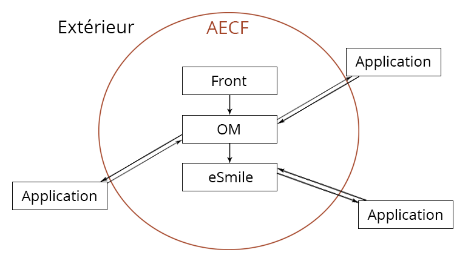
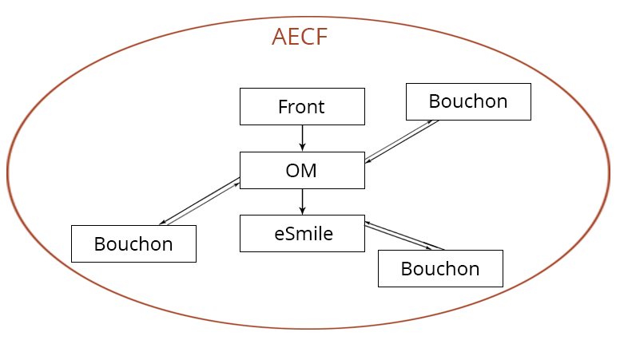
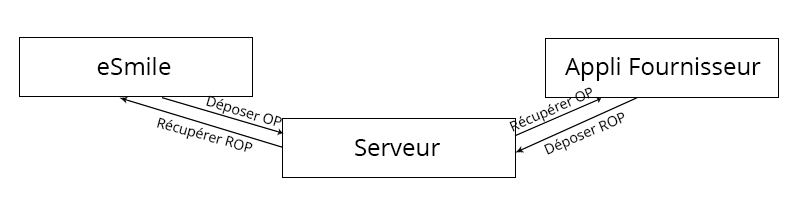
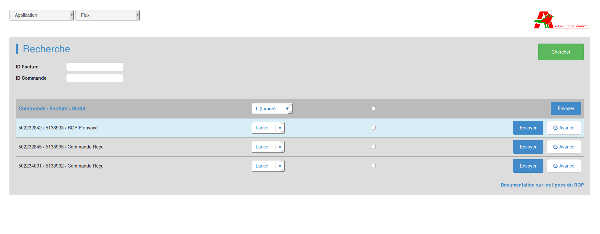
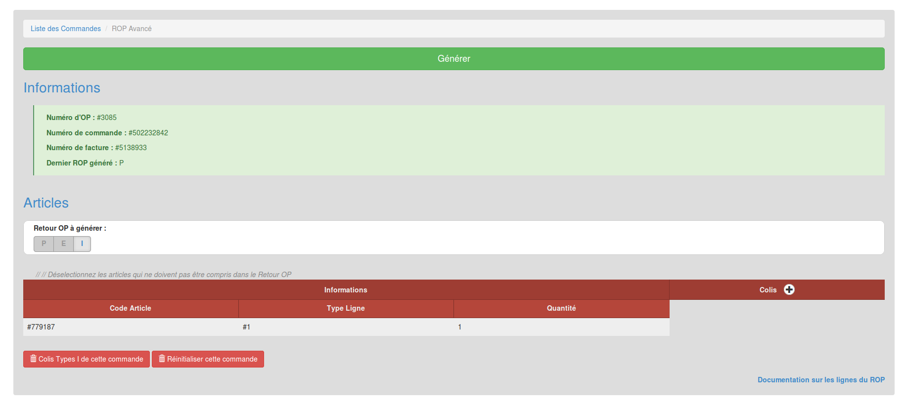
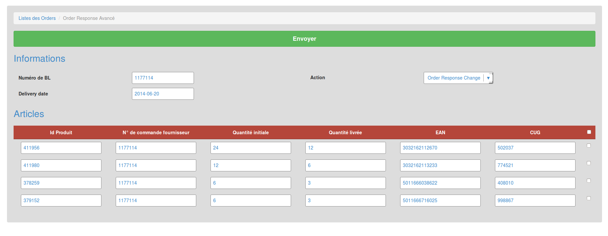

Deconinck Damien
Promotion 2013 / 2014
Tuteurs
Yoann Gesquière
Bruno Beaufils
Je tiens, pour commencer, à remercier Yoann Gesquière, pour son accueil au sein de l'entreprise, ainsi que pour son suivi et son professionnalisme tout au long de mon stage. Je le remercie également pour l'aide qu'il a sû m'apporter, et pour m'avoir montré les bonnes pratiques chez Auchan E-Commerce.
Je remercie ensuite l'ensemble des personnes qui travaillent au sein d'Auchan E-commerce, pour m'avoir rapidement intégré ainsi que pour leurs conseils durant ces trois derniers mois.
Ensuite, je tiens à remercier M. Beaufils, pour m'avoir suivi durant ce stage, et m'avoir poussé à réfléchir sur mes axes d'amélioration.
Enfin, je tiens à rémercier toute l'équipe pédagogique de la Licence Professionnelle DA2I, pour la qualité des cours que j'ai pu suivre tout au long de cette année, qui m'ont permis de progresser encore et toujours, et de d'approfondir mes connaissances dans les différents domaines de l'informatique.
Au cours de mon année de Licence Professionnelle DA2I, j'ai été amené à réaliser un stage de fin d'étude d'une durée de trois mois, dans le but de mettre en œuvre toutes les connaissances que j'avais acquises durant la formation. J'ai été contacté, durant ma période de recherche de stage, par l'entreprise CGI, qui m'a proposé de passer les entretiens afin réaliser mon stage chez eux, dans le développement web.
Mon sujet de stage s'est finalement porté vers le développement d'une application destinée à aider les analystes durant leurs phases de qualification. J'ai donc commencé par découvrir les façons de faire de l'entreprise, puis j'ai commencé à prendre en main les outils qui seraient utiles à mon développement. Tout au long de ce stage, j'ai donc pu mettre en œuvre ce que j'avais appris durant cette année de licence, mais surtout découvrir de nouvelles technologies, et de nouvelles manières de développer.
Social, Symfony, Progresser, Technologie, Lean
During this year, when I was studying DA2I in Professional Degree, I an internship that last three months. I made it in the purpose to use every knowledge I acquired thanks to my training. During my internship's research, I've been contacted by CGI, who asked me to go through interviews in order to perform my intership with them.
My internship's topic have finally been directed to the development of a software designed to help developers during their qualification phase. So, I started by learning the way and manners of CGI, then I learned how to use the tools which would be useful in my work. Throughout this internship, I implemented everything I learn during this degree, but especially I discovered new technologies and new ways of developping.
Social, Symfony, Progress, Technology, Lean
Durant mon année de Licence Professionnelle en DA2I, j'ai effectué un stage de 3 mois au sein de l'entreprise CGI, du 31 mars au 1er juillet. J'ai reçu comme mission le développement d'une application destinée à aider les analystes lors des tests de leurs nouveaux développements, pour un client de CGI : Auchan E-Commerce France.
Ce stage m'a permis d'enrichir mon domaine de connaissances en informatique, de découvrir l'esprit de l'entreprise, et de mettre en œuvre tout ce que j'ai appris durant ma formation.
Je vais tout d'abord commencer par vous présenter CGI, AECF, les différents outils que j'ai eu à utiliser pendant mon stage, et les projets déjà en place dans l'entreprise. Dans une seconde partie, je présenterais mon sujet de stage, son but, et pourquoi il était important qu'il soit mit en place. Dans la partie suivante, je détaillerais les différentes applications que j'ai développé pour ce projet. Et enfin, je ferais un bilan des compétences que j'ai acquises, et de ce que je retire de ces trois mois de stages.
Nous allons tout de suite commencer par parler de CGI, l'entreprise qui m'a recruté pour ce stage.
CGI, pour Conseils en Gestion et Informatique, a était fondé en 1976 à Québec, dans l'optique de créer une entreprise où il ferait bon vivre. Si à l'origine, le groupe travaillait uniquement dans le conseil, il a aujourd'hui un domaine de compétences bien plus grand, qui a évolué au fur et à mesure des différents rachats opérés.
A présent, CGI est un groupe reconnu mondialement, qui offre des services allant de l'intégration de systèmes aux développement d'applications. Tous les choix stratégiques qu'a fait le groupe au fur et à mesure du temps l'ont amené à devenir le 5ème plus grand groupe dans son domaine : les services en technologies de l'information et la gestion des processus d'affaires. Voyons maintenant plus en détail le parcours de CGI.
L'entreprise a été fondé par Serge Godin, rejoint ensuite par André Imbeau. La société a alors commencé à grandir, d'abord à Québec, puis ouvrant de nouveaux bureaux. Le premier rachat qu'opérera CGI sera celui de BST. Ce choix est stratégique, étant donné que BST propose des services d'externalisation de services informatiques, ce qui commencait alors à se répandre.
En 1992, CGI arrive en bourse, et continue de grandir. Le groupe commence alors à clairement définir son cadre de travail, en vue d'harmoniser l'ensemble des décisions prises au sein du groupe, et afin de maintenir la forte croissance qu'elle a connue jusqu'alors.
Par la suite, CGI va continuer à se développer en rachetant différentes sociétés du marché technologique. Son dernier rachat en date est celui de la société Logica, une SSII européenne qui a été incorporée au groupe en Août 2012, ce qui a contribué encore au développement à l'international de CGI. Parlons tout de suite de ce qui fait cette force à l'international.
CGI, avec le temps et grâce à ses rachats, a sû exporter son modèle à l'international. Aujourd'hui, CGI fait partie de la liste Forbes Global 2000, un classement qui répertorie les 2000 plus grandes entreprises du monde entier.
CGI, c'est une présence dans 43 pays, avec plus de 400 agences disséminées partout dans le monde. Malgré cela, CGI garde le même modèle dans toutes ses agences, et c'est ce qui lui a permis de croitre de façon constante, et d'avoir toujours de nouveaux contrats. Ce qui nous amène dès à présent à parler des sociétés avec lesquelles CGI travaille.
Avec le temps, le nombre de clients du groupe va croissant, et son développement à l'international va dans ce sens. CGI signe de plus en plus de contrat, dernièrement avec l'Organisme d’Inspection Générale du Ministère Suédois de la Santé et des Affaires sociales, et avant avec l'armée Américaine.
Finissons cette partie sur CGI en parlant de l'agence du Nord de la France, agence située à Lille.
L'agence Nord de CGI a ouvert ses portes en 2006. Elle compte de nombreuses grandes enseignes parmi ses clients, qu'elle accompagne tant au niveau décisionnelle que dans le développement : Camif, Décathlon, Castorama ...
Parmi eux, l'agence a aussi comme client Auchan E-Commerce France, société avec laquelle elle détient un contrat exclusif. Aussi, la prochaine partie concernera cette société uniquement, car bien qu'étant en stage pour CGI, je travaille actuellement chez ce client.
AECF est la cinquième activité du groupe Auchan créée, tout récemment, en 2010. L'idée, en séparant cette branche e-commerce, était de lui permettre de mieux se concentrer sur les enjeux et les possibilités du domaine. Cette branche regroupe Auchan.fr, AuchanDirect, et GrosBill.
AECF s'occupe de tout ce qui concerne l'aspect e-commerce du groupe Auchan. Tout ce qui passe par le site internet est géré par la branche e-commerce, tant sur le plan Informatique que sur le plan commercial.
Actuellement, certaines parties du sites reste géré par des entreprises extérieur. Le Front-Office, par exemple, est entièrement géré par la société Atos Worldline, qui est en charge du développement et de l'hébergement. Des projets sont actuellement en cours, afin de proposer un nouveau front entièrement géré en interne.
Le Back-Office est en revanche gérée entièrement par AECF. Cette partie comprends plusieurs projets qui seront détaillés dans une partie dédié. Avant cela, voyons de quoi se compose l'environnement de travail chez AECF.
Cette partie est dédiée à l'environnement de travail chez AECF. Elle présentera d'abord le Lean Management qui est un des points clés du développement au sein de l'entreprise. Je vais donc commencer par vous expliquer ce qu'est le Lean Management, et pourquoi je le considère comme une partie de l'environnement de travail.
Le Lean Management est une nouvelle façon de gérer des projets en entreprise. Cette pratique est originaire du Japon, et a pour but de travailler de manière plus efficace, en supprimant le superflux, et en remontant constamment les soucis rencontrés au cours des projets.
Pour en arriver à cela, le Lean Management passe, chez Auchan, par des tableaux de gestions. Ces tableaux, un par équipe, plus un pour l'ensemble des chefs d'équipes, permettent d'afficher constamment les alertes et les actions en cours. Ces tableaux disposent aussi d'une ligne par membres de l'équipes, qui lui permet de noter les développements sur lesquels il est, et d'afficher les points sur lesquels il bloque.
Afin que chacun soit constamment au courant des alertes, sans avoir forcément besoin de regarder le tableau, une réunion est organisée chaque matin. Au cours de ce point, chacun prend la parole, à tour de rôle, pour parler de son avancé, des informations qu'il a à remonter. Cela permet, en plus, de maintenir la cohésion de l'équipe.
Parlons maintenant des outils de développement chez AECF.
Le développement chez Auchan se fait principalement via l'IDE Eclipse. En effet, ils utilisent un script qui se lance via eclipse, et qui permet de synchroniser automatiquement toute modification effectuée dans les espaces de travails d'eclipse. Ce script ouvre un tunnel ssh constant vers leur serveur sur lequel est synchronisé l'ensemble des projets de chaque développeur.
Faire utiliser le même IDE à tout le monde permet aussi, lorsque l'intervention d'un expert ou autre est nécessaire sur un poste, que celui ne soit pas dépaysé. Cela lui permet d'intervenir rapidement et sans mauvaises surprises.
Le versionnement est utilisé via le logiciel Git à AECF. Ce logiciel, de plus en plus répandu, offre énormément d'options de gestions, et permet de facilement travailler à plusieurs sur un projet, sans avoir à trop s'inquièter de modifier les mêmes fichiers.
Maintenant que le contexte de développement a été mit en place, voyons les projets du back-office d'AECF.
Si une partie est réservée aux projets back-office chez AECF, c'est parce que pour mon sujet de stage, j'ai énormément dû me renseigner sur ces projets, et aller faire des recherches dans leurs codes. En effet, le sujet que j'ai eu à traiter touchait directement à tous les projets du Back-Office, et cela m'a obligé à découvrir leurs fonctionnements et leurs déploiements.
Les prochaines parties seront donc consacrées à ces projets, à commencer par l'OM.
L'OM est la partie du Back-Office qui est en charge des commandes. Cette partie récupère toutes les commandes passées sur le Front-Office et s'occupe de les faire valider. Ce projet a été récupéré lors du rachat de GrosBill en 2005. Depuis, Auchan et GrosBill possèdent chacun leurs propres versions de l'OM.
Une fois les commandes validées, l'OM envoi les commandes à eSmile, qui est charge de les envoyer aux fournisseurs, aux entrepots, ou encore de récupérer le suivis des colis associés. Tout cela se fait par des services extérieurs, auxquels eSmile fait appel. La prochaine partie concernera donc mon sujet de stage, directement lié à ces services extérieurs.
Maintenant que vous en savez plus sur ces projets, voyons un peu le mien, et son lien avec ceux existants.
Il est nécessaire de se rendre compte du contexte actuel chez AECF pour comprendre l'intérêt du projet, et son importance pour AECF.
Aujourd'hui, lorsque l'on développe un site web, une application, il est nécessaire de faire des tests. Si rajouter une nouvelle fonctionnalité à un site entrainait le dysfonctionnement d'une autre, cela se révelerait rapidement problématique Dans le domaine du e-commerce, cela signifierait de la perte en matière de satisfaction client. En conséquence, dès qu'un développement est fait, avant de le déployer pour les clients, on le déploie d'abord sur un environnement de qualification.
Cet environnement est en fait une réplique exacte de l'ensemble du site internet. Il communique de la même manière, avec les mêmes services externes. Cela permet de faire des tests sans risquer de créer des problèmes sur la partie accessible aux clients.
Cela pose en revanche un gros problème. Si une commande doit, par exemple, faire appel à un fournisseur avant de pouvoir être validée, on ne peut se permettre de faire appel au fournisseur sur un environnement de qualification. Celui-ci se retrouverait avec des commandes qui n'ont pas lieu d'être, étant donné que celles-ci ne servent que de test.
Et c'est là qu'intervient le projet que j'ai eu à réaliser.
Ci après, un schéma pour résumer la situation actuelle :
Le but du projet est donc de réaliser des applications, appelées Bouchons, qui vont permettre de faire progresser les commandes, sans faire appel aux services externes.
Un bouchon est appelé ainsi parce que sa fonction est de fermer l'environnement de qualification. Chaque appel à un service extérieur, que ce soit un fournisseur ou encore une entreprise chargée de gérer la livraison, est un trou dans l'application.
Et un bouchon est là pour fermer ce trou, en remplacant le service extérieur, en se comportant exactement de la même manière que le service. Prenons par exemple un fichier contenant un descriptif d'une commande qui est envoyé par l'OM à un fournisseur, et auquel celui-ci doit répondre si oui ou non il a du stock de cet article. Il faudra faire un bouchon qui va recevoir ce fichier de la même manière que le fournisseur, et qui renverra des valeurs paramétrables par l'utilisateur du bouchon.
Ci après, un schéma pour résumer la situation avec les bouchons :
Le langage utilisé pour le développement de ces applications est principalement le PHP. Ce langage, bien qu'originellement destiné au développement de petit site web, s'améliore de plus en plus aujourd'hui, et se veut ressembler à d'autres langages plus puissant, tout en gardant sa simplicité d'utilisation.
J'ai aussi utilisé le framework Symfony pour ces développements. Le but chez AECF est, à terme, de passer l'ensemble des applications du back-office sous Symfony, afin de rendre le code plus propre et plus facile à maintenir. Ce projet est le premier à l'utiliser.
Enfin, le framework bootstrap a lui aussi était utilisé. Ce framework, contrairement à Symfony qui est utilisé pour le code de l'application, est utilisé pour la mise en forme. Il permet à n'importe quel développeur de mettre facilement en forme un site web, en lui évitant d'avoir à s'occuper du design. En effet, la partie graphique n'est généralement pas la compétence principale d'un développeur, ce qui fait que bootstrap représente un gain de temps énorme.
Les prochaines parties vous décrirons de manières plus approfondies chaque bouchon, ce qu'il remplace comme service, et ce qui a été développé dessus. Commençons d'abord avec le bouchon de notification de commande.
Le bouchon de notification de commande est le premier que j'ai eu à développer. Son but était de remplacer un service qui communique avec les entrepôts, qui se chargent de donner des informations sur l'état d'une commande après sa création (sur le front par exemple).
Pour cela, eSmile, côté Auchan, crée un flux OP qui contient des informations sur les commandes qui viennent d'être créées. Ce flux est simplement un fichier texte. Les informations sont gérées dans ce fichier de manière fixe. Chaque ligne du fichier a une taille définie, et contient des informations sur un article, chaque information faisant elle aussi une taille fixe. Cela permet de retrouver facilement les données dont on a besoin.
Ce fichier, une fois rempli par eSmile, est ensuite déposé sur un serveur. C'est à ce moment là que l'application, à la place de l'entrepôt, se charge d'aller récupérer ce fichier. Elle stocke toutes les informations nécessaire à propos de cette commande. Ensuite, via une IHM, l'utilisateur peut visualiser toutes les commandes, et générer des flux ROP à la volée, avec différents états. Ces états sont :
Les flux générés, qui sont aussi des fichiers textes, sont construits de la même manière que les flux OP. Ils sont ensuite déposés, toujours sur le serveur d'AECF, et eSmile se charge alors de récupérer les informations de la commande.
Ci après, un schéma pour expliquer le cheminement d'un flux op :
J'ai commencé le développement par l'intégration des flux en sorties d'eSMile. Il me semblait en effet compliqués, et illogique, de développer une fonction de génération de flux retour, sans savoir de quoi était composé le flux en entrée.
J'ai donc développé un script destiné à être lancée à partir d'un terminal dans Linux. Une des forces de Symfony est le large panel d'options qu'il offre. Parmis ces options, Symfony donne la possibilité de créer des scripts qui ont accès à toutes les autres fonctionnalités de Symfony (Base de données, fichier de paramètres ...). Un script sous Symfony est donc une classe habituelle, à laquelle on peut donner un nom précis pour l'appeler ensuite grâce à la console de Symfony. L'appel à la fonction se fera, dans une console, dans le répertoire de Symfony, par la commande 'php app/console nomDuScript'.
Le script que j'ai développé se charge d'aller récupérer les fichiers OP dans un dossier choisi via un fichier de paramètres gérés par Symfony. Ensuite, en lisant les OP ligne à ligne, le script se charge de créer une entité par commande renseignée dans le flux, avec ses articles associés.
Le fait d'avoir fait cela sous forme de script permet de l'ajouter en tant que cron sur le serveur, et donc de récupérer automatiquement tous les OP ajoutés dans le dossier, ce qui était une des exigences de cette partie.
La partie suivante était la gestion d'une IHM. Cette IHM permet aux utilisateurs de visualiser les informations sur les commandes que le script avait intégrés, et sur les articles que celles-ci contiennent. Cette IHM comprends deux formulaires. Ceux-ci sont gérés sous forme d'objets par Symfony, qui crée de lui même le visuel associé. Le premier formulaire permet de faire une recherche sur les commandes existantes. Le second permet de sélectionner les commandes pour lesquelles on veut générer un retour, avec leur statut. C'était la première grosse difficulté que je rencontrais avec Symfony. En effet, les formulaires Symfony sont très pratiques, mais imposent différentes contraintes, et ont une architecture qui leur appartient. Heureusement, grâce aux nouveaux experts Symfony chez AECF, j'ai rapidement réussi à me former sur ce sujet.
Une seconde IHM, permet d'afficher une commande précise. Cette interface représentait un nouveau niveau de difficulté. Les formulaires Symfony acquis, je me retrouvais avec un formulaire bien plus compliqué à développer : celui-ci devait permettre d'afficher l'ensemble des articles de la commande dans un tableau, dans les lignes, avec leurs informations dans les colonnes, ainsi que les colis auxquels ils appartenaient (tous les articles d'une même commande n'étant pas forcément envoyé dans un même colis). De plus, il fallait pouvoir gérer l'ajout de colis à la volée, ainsi que la possibilité de ne sélectionner aucun colis pour un article, afin de ne pas l'ajouter dans le fichier ROP qui serait générés. Tout cela en respectant l'intégrité du modele de gestion des formulaires Symfony.
Après plusieurs heures de recherches, cela fût possible grâce à un contournement du problème. Au lieu de gérer les colis avec une liste de case à cocher, chaque article possède un champs caché qui contient l'id du colis auquel il est associé. Le champs est changé par du javascript, lorsque l'utilisateur sélectionne un nouveau colis.
La génération du flux de retour se fait à partir des deux IHM précédentes. La première, qui affiche des informations sur toutes les commandes reçues dans des flux OP, permet d'en sélectionner autant que voulu, puis de générer un fichier de retour OP à partir de ces commandes. Cette génération se veut basique, elle parcours toutes les commandes, puis écrit un fichier contenant toutes les informations nécessaires.
La seconde offre la possibilité de générer des retours OP pour une seule commande, mais en modifiant les colis lié à cette commande. Il est possible de choisir dans quel colis placer chaque article, et donc de générer des flux plus poussés pour les tests.
La prochaine partie traitera d'un bouchon qui a le même but : Avertir de la création d'une commande.
L'application remplacée ici est une application des fournisseurs directement. Le but est le même que pour les flux op : notifier, le fournisseur directement cette fois, qu'une commande vient d'être créée. Cela est fait dans le cas des commandes d'approvisionnement de stocks, ou des commandes LDF.
Le service va lire un flux Order, qui contient des informations sur la commande, les articles, et le client. Ce flux, à la différence du flux OP, a un format bien plus partique à lire : le XML. Exemple de XML :
<commande> <article> <id>327596</id> <description>Une chaise</description> </article> </commande>
Ensuite, une fois ces flux intégrés, il est possible de générer des flux Order Responses. Ces flux sont aussi au format XML, et renvoi, principalement, le statut de la commande, avec les quantités d'articles prises en charge.
Les flux Orders, comme les flux OP, doivent être lu dans un dossier qui est paramètres via le fichier de paramètres de l'application. Les flux sont bien sûr récupérés de la même manière que pour les flux OP, via une commande qui est destinée à être utilisée comme cron. Cela a permis de mutualiser une bonne partie du code, et de se servir des mêmes classes pour les deux, en changeant simplement la partie qui stocke les données en base.
L'interface de cette application ressemble fortement à celle des retours OP. Elle propose un espace de recherche pour trouver des commandes, qui affiche ensuite un tableau qui récapitule les commandes correspondantes. Une fois dans ce tableau, on peut choisir les commandes à générer, l'état associé, et ne reste plus qu'à cliquer sur le bouton de confirmation. Les états sont :
Il existe aussi une interface avancée pour ce mode. Cette fois-ci, elle permet de changer des informations sur la commande (date de livraison, état), ainsi que sur des articles (quantitée livrée, numéro de livraison, etc).
Les flux Order Responses sont eux aussi des fichiers XML. Le gros avantage à cela, c'est qu'ils sont très facile à générer dans Symfony. En utilisant un moteur de rendu, comme Twig, il est possible de constituer le corps de base du fichier, puis de le remplir avec les données que l'on veut.
Ainsi, le script de génération de contente de récupérer, via le formulaire, les infos dont il a besoin (les commandes à générer), puis il les passe à un fichier twig qui se charge d'en faire l'affichage, et de retourner son contenu. Il ne reste alors plus qu'à enregistrer le fichier là où eSmile s'attend à le trouver.
Voyons maintenant un tout autre type de service : les WebServices. Le prochain bouchon étudié est un WebService de suivi de commande.
Le bouchon décrit dans cette partie est destiné à remplacer une application de suivi de commande. La gestion des flux est ici totalement différente. Les flux passent par un appel à un WebService. Un WebService est une interface qui permet à deux applications de 'discuter' entres elles. Pour cela, le WebService met à la disposition d'applications externes des fonctionnalités que celle-ci peut appeler.
Le WebService est défini grâce à une fichier WSDL, qui est en fait un fichier au format XML, qui permet d'informer quelles fonctions fournit le WebServices, quelles données ces fonctions prennent en entrées, et quelles données sont renvoyées en sortie. Cela permet à la personne qui va se servir du WebService de savoir quoi mettre dedans.
C'est de cette manière qu'AECF fait appel à la société qui gère le tracking de ses colis. Elle envoi à expedito, grâce à une fonction dédié à cela, un flux avec des informations sur une commande, et expedito envoi en retour un flux avec des informations sur le tracking, comme le numéro, ou encore les liens vers leur site pour suivre directement le colis.
Ce bouchon est un peu particulier, pour moi, de par sa conception. Je n'avais jamais vu ce type de service avant, et pourtant, les WebServices sont extrêmement pratique. Par exemple, ils permettent à une société A de fournir des fonctions qui vont chercher des informations dans leur base de données. Une société B pourra ensuite appeler cette fonction, sans savoir ce qu'il se passe dedans, et donc sans compromettre la sécurité de l'entreprise A, et ensuite utiliser les données renvoyées par la fonction.
C'est ce qui se passe dans le cas de ce bouchon. La société qui gère le suivi des commandes met à disposition des sociétés avec lesquels elles travaillent une fonction, qui demande en entrée un fichier xml, qui contient des informations sur la commande, et renvoi un autre fichier xml, qui renvoi des informations sur le suivi (numéro de dossier, url pour suivre le colis ...)
J'ai donc développé un web service qui prend le même paramètre en entrée, et retourne le même en sortie. Un traitement est effectué sur ce fichier xml en entrée afin de créer les bonnes données pour le fichier en sortie. Les urls pour suivre le colis sont factices, tous comme les numéros de colis, vu qu'il ne pointent vers aucunes données existantes chez la société qui gère les suivis. Cela permet simplement à l'OM de continuer son traitement en ayant reçu une réponse valide de la part du web service. Le fichier de retour est aussi géré grâce à un fichier twig, pour faciliter son rendu.
Voyons maintenant le dernier bouchon que j'ai eu à réaliser, qui gère les points de fidélités des clients.
Cette partie va parler de la gestion des points de fidélité. L'application que remplace le bouchon utilise aussi un WebService, qui fournit différentes méthodes pour récupérer les informations et les sauvegarder, toujours par réception/envoi de flux. Cette application est appelée, par exemple, à chaque fois qu'un client consulte un article, pour avoir les réductions correspondantes.
Cette partie est certainement la plus importante que j'ai eu à faire. Le premier WebService, celui de suivi de commande, était simple : Il ne fournissait qu'une seule fonction, prennait une chaine de caractère en entrée qui représentait un fichier XML, et renvoyait une chaine de caractère qui représentait un autre fichier XML.
Celui-ci est autrement plus complexe. Le WebService fournit en effet une vingtaine de fonction, pour commencer. Je n'en ai eu qu'une dizaine à remplacer, mais celles-ci sont assez complexes, et utilisent un format de données un peu à part. En effet, le fichier envoyé est toujours un XML. Mais cette fois-ci, le WSDL du WebService spécifie toutes les données que doit contenir le fichier XML, et à la moindre faute, ou à la moindre absence, la requête est rejetée, ou mal générée. De plus, du fait de cette définition de données un peu particulière, le WebService ne reçoit pas le fichier XML tel quel, mais un objet qui contient d'autres objets, qui contiennent les données.
Ce bouchon gère beaucoup de donnée. Bien que tout passe par un web service, et donc que l'utilisateur du bouchon n'a pas à faire de choix dans les données à renvoyer, il a malgré tout la nécessité d'entrée des données dans l'application. Les clients, et leur cagnotte, sont récupéré dans le WebService. J'ai donc crée une IHM simple qui permet d'ajouter un client, et de modifier sa cagnotte.
Toujours pour les mêmes raisons, j'ai ajouté une IHM qui permet d'ajouter et de modifier des remises, en ajoutant leur montant, et les articles auxquelles elles sont liées.
La fonction principale de ce bouchon est appelée à presque chaque étape de création d'une commande par un client, ainsi qu'à chaque affichage d'un article. Elle permet en fait de récupérer, en fonction d'un article, voir de toute une commande lorsque l'on accède à son panier, de connaitre le nombre de points à créditer sur une carte fidélité, ou les différentes remises directes à effectuer sur un article. Ce qui fait que cette fonction nécessite beaucoup d'informations, comme le code de l'article, mais aussi le numéro de carte du client, les informations sur l'enseigne, la présence ou non d'une remise déjà effectuée qui pourrait rentrer en conflit avec une autre.
C'est ce grand nombre de paramètres qui rend compliqué la gestion des données en entrées. J'ai donc commencé par réaliser une fonction simple qui prend la requête et place les valeurs qui nous intéresse dans un objet destiné à ce seul effet, afin de faciliter par la suite le traitement des données.
Ensuite, l'algorithme fait différentes choses. Il compare d'abord le numéro de la commande envoyé par l'OM afin de le comparer avec celle déjà créée dans le bouchon. Si il y en a déjà une, il la récupére et y ajoute les articles qui sont présent dans le flux mais que celle-ci ne connait pas. Sinon, il crée une commande puis l'ajoute en base.
Ensuite, il vérifie l'existence du client dans sa base, et retourne une erreur si il n'existe pas. Sinon, il parcour tous les articles de la commande, cherche des remises liées, puis crée le flux associé, toujours grâce à un fichier twig.
Parlons maintenant de tout ce que je retiens de ce stage. Prendre part à un projet de ce type permet d'acquérir de nombreuses compétences, de se former sur de nombreux sujet, et c'est ce qui va être décrit dans cette partie.
En premier lieu, il y a la gestion d'un projet. C'est certainement le sujet sur lequel je suis le plus monté en compétences. Savoir évaluer combien de temps il va falloir pour terminer une tâche, un projet, réagir rapidement lorsque l'on se rend compte que l'on va dériver par rapport au temps estimé initiallement. Mais aussi remonter les points sur lesquels on bloque, dès qu'il y en a qui se présentent, afin d'obtenir de l'aide de personnes plus qualifiée. C'est un sujet qu'on ne voit pas en cours, car il s'apprend en étant dans un vrai contexte projet, mais qui compte énormément.
Le second domaine dans lequel j'ai le plus gagné en compétence est le PHP. C'est une technologie que l'on ne voit pas du tout durant notre formation, par rapport au JAVA qui au cœur de beaucoup de matières. C'est pour cette raison que j'ai decidé de partir sur du PHP, afin d'acquérir de nouvelles connaisances et de pouvoir être polyvalent.
Vient ensuite Symfony. J'ai découvert ce framework un mois avant d'arriver en stage, il m'a donc fallu me former rapidement pour en connaitre les bases avant d'arriver en stage, puis j'ai continué à me former chez AECF, avec les professionnels du sujet. L'utilisation de framework est de plus en plus répandue aujourd'hui, et il est donc nécessaire d'en connaitre. Symfony étant un très bon framework PHP, j'ai trouvé très intéressant de pouvoir évoluer sur ce sujet.
Bien qu'en informatique, l'aspect technique soit très important, le côté humain reste ce qui compte le plus. En arrivant chez CGI, je me suis retrouvé dans une entreprise au sein de laquelle chacun fait de son mieux pour avancer dans ses projets, mais sans pour autant oublier les autres. La bonne humeur y est de rigueur, et il n'est pas rare que nous nous retrouvions le midi pour sortir manger ensemble et parler d'autres choses que du travail.
De plus, intégrer une entreprise le temps d'un stage est une belle expérience qui diffère totalement de ce que l'on voit durant notre cursus. L'ambiance y est bien sûr plus sérieuse, car les projets sont extrêments importants, et qu'il faut tenir les délais auxquels l'on s'engage. C'est l'une de ces choses que l'on apprend que lorsqu'on est confronté à un véritable contexte d'entreprise.
Maintenant que mon stage est fini, il est temps d'entrer définitivement dans la vie active. CGI m'a fait une proposition d'embauche, que j'ai acceptée.
Framework :
Un framework est outil qui fournit un ensemble de composants, qui ont pour but de structurer et de poser les bases du code d'un développeur. Il permet de garder une même architecture sur tous les projets qui utilisent ce framework, et donc de faciliter la prise en main par d'autres développeurs.
Phase de qualification :
Un projet a un cycle de vie. Il est d'abord en étude, afin de le spécifier. Vient ensuite le développement, la revue de code qui permet de valider que le code est bien fait, puis la qualification. Durant cette phase, le projet est déployé sur un serveur de test, et il est utilisé au quotidien par les analystes, afin de valider qu'il n'y ai pas de bugs ou de régressions, et qu'il rempli bien son rôle.
Front-Office :
Partie d'un site web qui est destinée à la relation avec le client. C'est la partie visible par tous d'un site internet.
Back-Office :
Partie opposée au Front-Office, réservée à l'entreprise, dans laquelle les employés peuvent par exemple suivre les commandes, ou voir comment se porte le site.
IDE :
Pour Integrated development environment, ou Environnement de Développement Intégré, outil qui permet de développer une application de A à Z. Il offre, en général, un environnement de test, la possibilité de lancer directement l'application, ou encore de voir les erreurs de compilation.
Versionnement :
Système qui permet de sauvegarder un projet dans ses différents états tout au long de sa vie. Par exemple, après une importante mise à jour d'un projet, si celui-ci ne fonctionne plus normalement, il est possible de revenir facilement en arrière
WebService :
Partie exposée d'une application, qui fournit des méthodes utilisables par des applications extérieures, afin de récupérer des données ou d'effectuer des opérations sans avoir à se rendre sur le site de la société.
Documentation PHP : php.net/docs.php
Documentation Symfony : symfony.com/doc/current/index.html
IHM pour la génération de retour OP
IHM pour la génération de retour OP avancé
IHM pour la génération de flux Comarch
